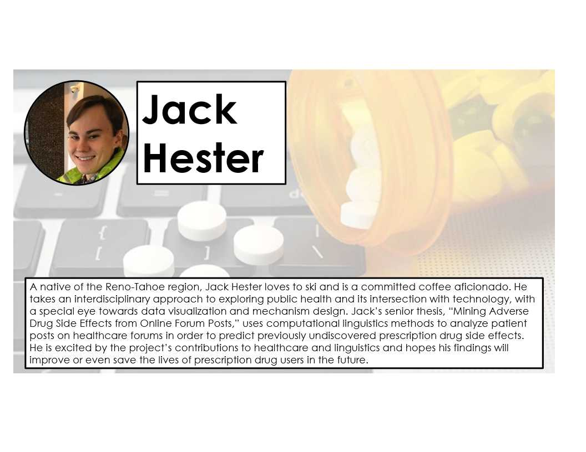

Senior Spotlight, found on an Emory Institute for the Liberal Arts annual poster, and on the web soon(tm)
Cameo:

Link TBA
"A Fresh Approach to Disability: Linking liberal arts to medical sciences" found in the Emory Physical Therapy Magazine.
Cameo:
"Jack Hester 19C was a student in the class and identifies as someone with a disability—in his case a series of physical issues that include a short right leg and scoliosis. He wasn’t quite sure what to expect from the class and was pleasantly surprised. “This class reaffirmed my interest in examining topics in medicine, especially about disabilities, from a humanities-based perspective,” he says."